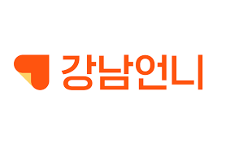
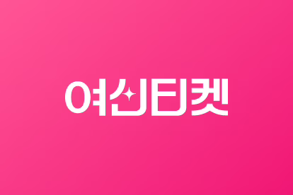
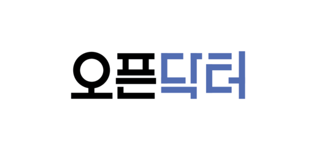
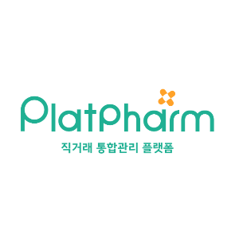
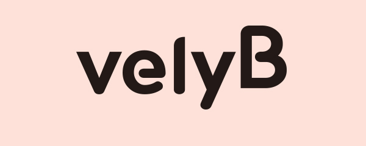
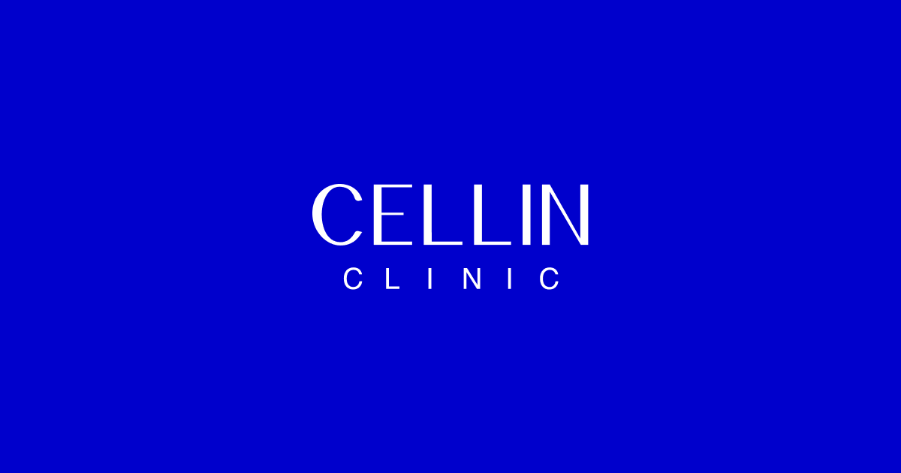

새봄여성의원 일본 마케팅 진단 · 전략 제안
기본 세팅 → 트래픽(인지) 확장 → 매출 확장. 일본인 방한 의료관광 수요를 타깃으로 X·LINE·인스타·PR로 인지를 만들고, 라인 상담·예약 매출로 전환합니다.
회사 소개
코스피 상장사부터 네트워크 병원 본사까지. 의료·의약 리더들의 글로벌 마케팅을 전담합니다.
대한민국 대표 제약사, 코스피 상장 바이오 회사, 네트워크 병원 본사, 피부과의원, 한의원, 다이어트 클리닉 등의 글로벌 마케팅을 담당하고 있습니다.
글로벌 인플루언서 1,000명, 연간 병원 내방 외국인 14,000명 접점, 분기별 의료관광 트렌드 데이터.
함께한 곳






01. 일본 마케팅 Overview
일본에서는 인스타그램과 X(트위터)가 핵심입니다. 인스타는 정보 탐색과 레퍼런스 확인용으로 효과적이지만, 실질적인 확산과 방문·상담 결정은 대부분 X에서 일어납니다.
‘레포(후기)’가 시술명 핵심 해시태그에 노출되는 것이 일본 마케팅의 핵심 공식입니다.
일반 고객의 솔직한 후기가 타깃 시술 해시태그 상단에 노출되도록 만들고, 이를 라인 상담으로 연결합니다.
채널·메시지·라인 CRM·지표 기준을 세팅합니다. 확산과 전환의 토대를 먼저 만듭니다.
X 중심의 후기 확산과 협찬으로 조회수와 라인 신규 상담을 키웁니다.
3개월 이후 신뢰 자산(협찬) + 조회수 + 매출이 동시에 성장하는 선순환이 만들어집니다.
[타깃 시술 × 클리닉명] 키워드가 SNS·구글·야후 등 모든 고객 경로에서 노출되도록 콘텐츠를 확산합니다. 특정 시술(예: 여성 성형, 요실금, 다이어트 등)에 관심 있는 잠재고객의 알고리즘에 노출(발견형 동선)되거나 검색(목적형 동선)했을 때 클리닉을 인지시키고, 라인 상담으로 유도합니다.
| 단계 | 목표 지표 (Leading Indicator) | 전략적 이니셔티브 (Execution Focus) |
|---|---|---|
| 유입 Acquisition | LINE 신규 상담수 증가 | X 중심의 트래픽 극대화. 클리닉브릿지의 여러 ‘마케팅 공식’으로 X 기반의 솔직한 후기 확산을 전개해 LINE 신규 상담자수를 극대화합니다. |
| 전환/관리 Conversion | LINE 재상담수 & 초진 전환율 증가 | LINE CRM 시스템 구축. 유입 트래픽을 LINE으로 집중시키고, 친절·신속 응대 매뉴얼과 체계적 CRM으로 이탈을 막아 방문 예약 전환율을 극대화합니다. |
| 재구매 Retention | 재진 환자수 & 객단가(LTV) 증가 | DB 기반 맞춤형 오퍼. 축적된 고객 DB로 재진 주기에 맞춘 시술 정보·혜택을 LINE CRM으로 제공해, 지속 가능한 매출 증가를 달성합니다. |
02. 일본 인바운드 시장 기회
방한 의료관광의 코어 소비층이 일본 2030 여성이라는 점이, 여성의원에 구조적으로 유리합니다. 이미 형성된 방한 수요에 ‘여성 진료’라는 선택지를 더하는 접근입니다.
여성 성형·요실금 등은 외모 중심에서 기능·건강 중심의 셀프케어로 인식이 이동하고 있습니다. 이미 중국에서는 샤오홍슈·더우인 등 SNS를 통해 여성 성형 후기·회복 브이로그가 30대 여성 사이에 확산되며 시장이 빠르게 커졌고, 이 흐름이 한국 의료관광 수요로 연결되고 있습니다.
일본 2030 여성은 SNS 감도가 높고, 성형·시술 Before/After 콘텐츠가 SNS에서 활발히 소비됩니다. 방한 미용 의료에 이미 익숙한 만큼, 여성의원은 신규 행동을 설득할 필요 없이 기존 방한 동선에 진료 하나를 얹는 구조입니다.
유의. 여성 진료는 민감·프라이버시 영역입니다. 후기·협찬 콘텐츠는 노출 수위와 표현을 신중히 설계하고, 일본 내 ‘스테마(뒷광고)’ 표기 이슈에 맞춰 광고 표기를 준수합니다.
한국 여성의 관리·루틴을 소개하며 자연스럽게 클리닉을 노출하는 정보성 콘텐츠.
요실금·여성 고민 등 니즈를 짚고 해결책과 함께 클리닉을 제시하는 콘텐츠.
시술 과정과 회복·후기를 보여주는 전환형 콘텐츠(프라이버시 고려).
03. 포지셔닝 & Key Message
여성 진료에서 일본 환자는 저렴한 곳이 아니라 ‘믿고 맡길 수 있는 곳’을 찾습니다. Key Message는 두 관점으로 설계합니다. 공급자 관점(왜 새봄여성의원인가를 한 문단으로 정의)과 소비자 관점(일본 고객이 실제로 쓸 법한 후기·트윗 문장)으로 나눠, 콘텐츠 전반에서 일관되게 소통합니다.
여성 진료에 특화된 전문성과 배려로, 민감한 고민도 편하게 상담할 수 있다는 ‘안심’을 최우선 메시지로 세웁니다.
비대면 상담·예약 동선으로 방문 부담을 낮춥니다. 일본 환자가 사전 상담을 라인으로 편하게 진행하도록 설계합니다.
잠실·송파 도심 접근성으로 방한 여정(관광 + 진료) 동선에 자연스럽게 결합됩니다.
여성 성형·요실금·다이어트 등 시그니처 시술을 하나 정해 “이 시술 = 새봄여성의원” 내러티브를 축적합니다. 병원과 협의해 확정
참고 예시 — 공급자 관점 Key Message 작성 방식 (타 클리닉 예시)
“공장식 클리닉과 다르게, 상위 2% 전문의가 직접 상담·시술한다. 대표 시술에서 누적 임상 데이터를 보유하고, 개인별 상태를 정밀 분석해 1:1 맞춤으로 진행한다. 도심 접근성으로 방한 동선에 자연스럽게 결합되어, ‘제대로 된 전문의 진료’를 원하는 국내외 고객에게 최적의 안심과 접근성을 제공한다.” — 이 구조에 새봄여성의원의 실제 강점을 넣어 문장화합니다.
위는 메시지 설계 방식을 보여주는 참고 예시입니다. 새봄여성의원의 실제 강점(대표 시술·의료진·안전성·접근성)을 동일한 구조로 문장화해 적용합니다.
04. 검증된 플레이북
| 축 | 주력 채널 |
|---|---|
| ① [Earned] 인플루언서 협찬 | X, Instagram |
| ② 전환 프로모션 & RT 바이럴 | X |
| ③ 정보성 콘텐츠 바이럴 | X |
| ④ Owned 매체 · LINE · PR | LINE, X 공식, PR |
05. 마케팅 액션 제안
Owned(프로모션·정보성) 콘텐츠와 Earned(인플루언서) 콘텐츠를 병행하고, 주차별 플랜으로 운영합니다.
규격은 [X·인스타] 1080×1350(4:5), [LINE] 1040×937. 국문 디자인이 나오면 일문으로 번역해 X·인스타·라인에 업로드합니다. X는 저녁 19시 스케줄 업로드를 권장하고 이미지는 1~2개, 가격 장표는 댓글로 첨부합니다. LINE은 카드형 메시지 + 전체 메시지 발송을 반드시 병행합니다.
Key Message가 고객 동선 전반에서 일관되게 전달되도록 사용합니다. 국문 인스타에서 발행 중인 콘텐츠 중 Key Message와 얼라인되는 내용을 번역·업로드하는 방식을 추천합니다.
비용 효율을 위해 내방 고객을 최대한 활용해 콘텐츠 제작을 요청합니다. 병원의 Key Message를 인플루언서에게 전달해 그에 맞는 콘텐츠를 제작하게 합니다. 여성 진료 특성상 프라이버시를 존중하고, 인바운드 협찬 계정은 저장·공유 반응을 보고 선별합니다.
이벤트는 노출되지 않으면 매출로 이어지지 않습니다. 최소한 라인 전체 메시지 발송은 반드시 진행하고, 내원 일본 고객에게 프로모션 게시글의 인용 RT·RT를 요청합니다(올리브영 상품권·마스크팩 등 소소한 보상 제공).
06. 콘텐츠 자산
시즌·시술별 프로모션 콘텐츠와, Key Message 기반 정보성 콘텐츠.
후기 중심의 협찬 콘텐츠(프라이버시 고려).
라인 리치메뉴와 CRM 메시지 템플릿.
Key Message 기반의 신뢰 콘텐츠와 PR 원고.
예시 성과 데이터 (인스타 기준, 7일)
일본향 대행 실데이터 기준 예시입니다. 새봄여성의원에서 이 수치가 어느 수준으로 재현되는지가 핵심 검증 포인트입니다.
방한 의료관광의 코어는 일본 2030 여성입니다. 검증된 X 후기 확산 공식과 라인 CRM으로, 인지부터 재구매까지 매출로 연결합니다.
피부과·다이어트 클리닉에서 검증한 방식을, 코어 타깃(2030 여성)과 정확히 맞는 여성의원에 적용합니다.
일본에서 타깃 시술을 검색·추천받을 때 새봄여성의원이 반복해서 보이고, 라인으로 상담이 들어오는 상태를 목표로 합니다.
3개월 이후 신뢰 자산·조회수·매출이 함께 성장하는 선순환을 만듭니다.